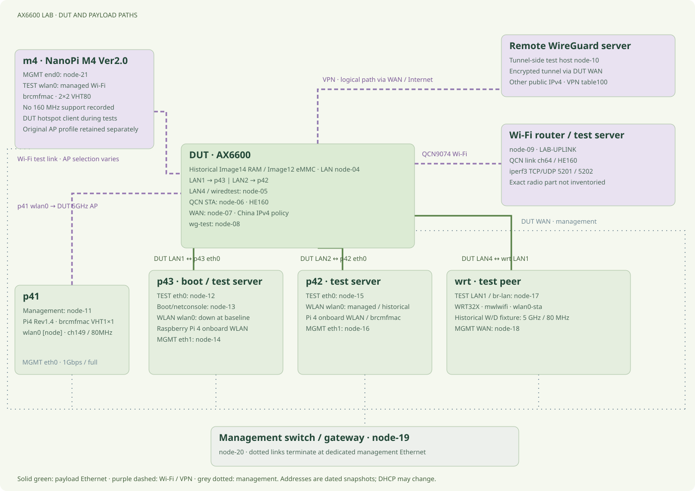
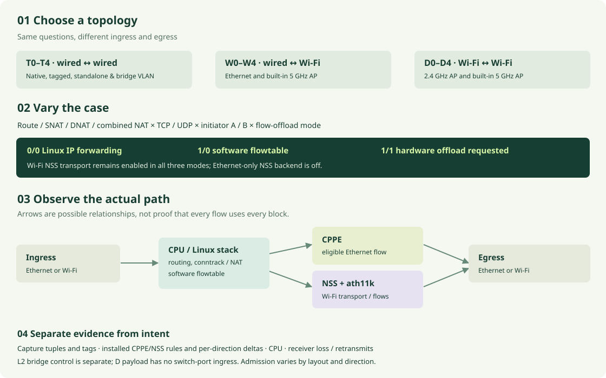
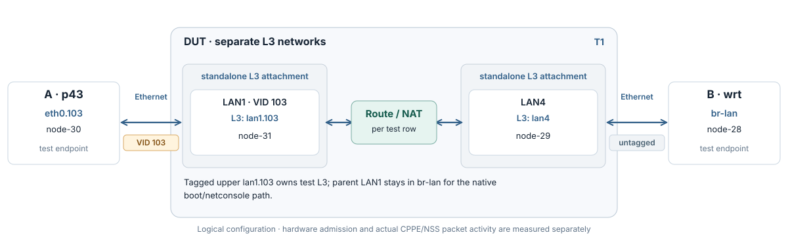
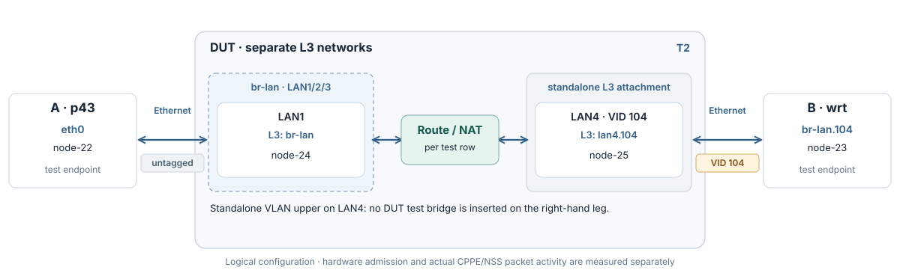
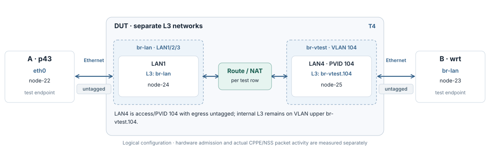
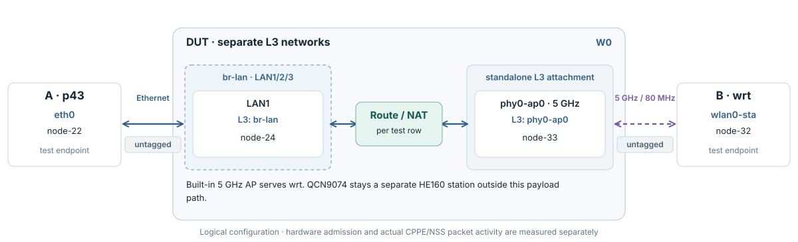
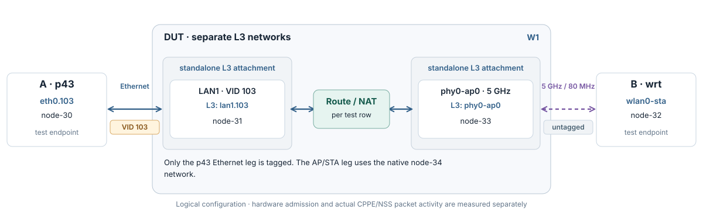
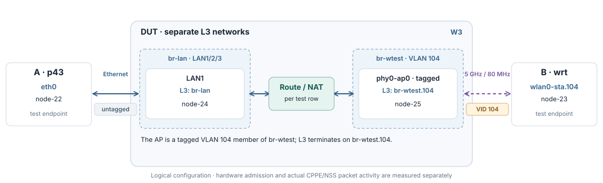
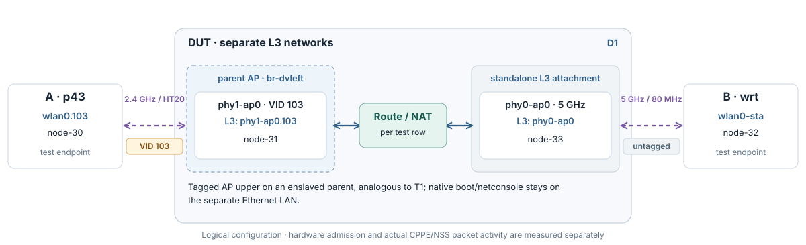
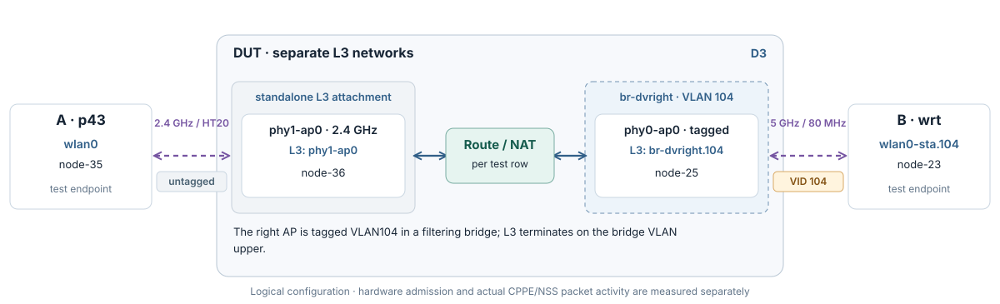

T0
Native Ethernet
LAN1/br-lan to standalone LAN4; untagged on both test links.

An evidence-led guide to the hardware, acceleration paths and experiments behind a mainstream OpenWrt build for the JDCloud AX6600.
Start with the board. Follow the packet. Trace the decisions.
Related projects and feeds; arrows are conceptual, not proof of exact ancestry for every commit.
Commit-level audit is needed before each change is classified as essential. NSS packages ↗ · OpenWrt IPQ ↗ · LibWrt ↗
Illustrative ownership, not one mandatory packet route. Installed rules and counter deltas establish the actual path.
Bus-level architecture of the board: the integrated 5 GHz radio (phy0, ath11k_ahb) and the discrete PCIe 5 GHz radio (phy2, ath11k_pci) are separate subsystems, each with its own RF path. The integrated subsystem also supplies the 2.4 GHz radio (phy1). The inventory identifies the PCIe radio by its QCN9074 driver family; the OpenWrt hardware record describes related radio part numbers. Confirm chip markings and board revision before treating these names as interchangeable.

See the community AX6600 teardown photographs ↗ and the OpenWrt board-data repository ↗. External photographs remain on their publisher’s site.
The board device tree ↗ records the PCIe endpoint, Ethernet port/PHY mapping and PCS modes. The shared board description ↗ records the 8-bit eMMC controller, USB and QCA8075 PHY package. These upstream links track main; lab radio names are recorded runtime identities. RF companion chip markings, antenna routing and PCIe negotiated rate are not established by the diagram.
Scope: JDCloud RE-CS-02, commonly called AX6600; OpenWrt target qualcommax/ipq60xx. This is a device-specific case study, not a blanket recipe for all IPQ601x boards.
The original inspection identified a Qualcomm IPQ60xx platform, an integrated 5 GHz radio, an integrated 2.4 GHz radio, and a PCIe QCN9074 5 GHz radio. The stock snapshot used the integrated 5 GHz radio at 80 MHz and the QCN9074 at 160 MHz. Board data, calibration, PCIe wiring, Ethernet topology, storage and boot configuration are board-specific; check them rather than copying this device tree to another board. The OpenWrt device record ↗ identifies the SoC as IPQ6010. Record exact silicon identity independently on a new target.
The device has eMMC and a Qualcomm boot chain. The original stock inspection found separate kernel and rootfs partitions and an F2FS overlay in the stock root partition. Later authorized work changed the secondary layout, so original partition sizes are historical. Slot names alone did not prove fallback or safe upgrade behavior.
OpenWrt ↗ supplies the upstream target, Linux integration and build system. ImmortalWrt ↗ describes itself as an OpenWrt fork with additional device support, packages and downstream changes. LibWrt ↗ is another downstream integration; its maintainers describe combining OpenWrt/ImmortalWrt work with Qualcomm NSS support. These are related projects, not interchangeable source trees or a proven single straight-line history for every package.
The inspected stock image identified itself as LibWrt 25.12-SNAPSHOT, Linux 6.12.108, with NSS firmware 12.5. Ethernet interfaces were bound to nss-dp; ath11k and mac80211 referenced the NSS driver. Package and feed identifiers reveal integration lineage, but do not establish all exact source and feed commits in the original image. The exact stock LibWrt commit was not resolved in the initial audit.
The important distinction is who owns each part of the packet path. Linux networking and netfilter set up flows; the hardware and firmware paths then depend on device, topology, flow eligibility and active configuration.
In the mainstream-derived lab images, CPPE handles eligible Ethernet hardware flow offload; the NSS firmware and ath11k integration accelerate eligible Wi-Fi paths. The selected configuration enables Wi-Fi NSS 12.5 and disables the separate Ethernet-only NSS backend. This does not mean an Ethernet leg of a mixed Wi-Fi flow cannot use NSS resources. Software flow offload, CPPE entries and NSS rules are separate observations.
Conceptually: client → radio / ath11k → NSS when eligible → Linux or CPPE forwarding → Ethernet. The reverse direction and bridge, VLAN, NAT and routed paths have different ownership and eligibility. This is a guide to investigation, not a claim that every packet follows one fixed path.
Capture the actual ingress and egress tuple, then compare installed CPPE rows and NSS rules with direction-specific packet counter deltas during that flow. Correlate with receiver results, retransmissions or loss, and comparable per-core CPU. An HW_OFFLOAD flag, a cumulative push counter, or an idle table snapshot alone does not prove that a particular flow traversed hardware.
The 2026-10-31 capacity probes reached 2,048 CPPE base slots in the measured IPv4 routed and SNAT cases. NSS 12.5 plateaued at 1,024 installed IPv4 UDP rules with turnover at higher offered counts. These are independent measured budgets, not universal chip limits. IPv6 CPPE rows consume two slots; distinguish rules from connection counts.
The goal was to retain a mainstream OpenWrt base while bringing back the acceleration required for this board. “Minimum necessary” is a design objective: a patch-by-patch proof of minimality across all configurations is still an audit task, not a measured result.
Stock and native baselines · October 2026. Read-only stock inspection established the LibWrt/NSS stack. A native upstream RAM image provided a control with NSS absent and vanilla ath11k/mac80211. Native operation did not eliminate all stress resets, so the evidence does not attribute every reset to NSS.
First integration · 1 November. Image 2 compiled NSS but failed startup when newer EDMA rejected shared DMA/reset assumptions. Image 3 restored shared-reset and active-ring guards and CPU-only queue mapping; Wi-Fi NSS started. Its MTU regression still failed: 296 of 3,258 qualified boundary points failed. Image 4 improved enforcement but retained in-range loss. Those failures remain part of the record.
Isolation and updated source · 2–5 November. A matched native-mode control helped investigate receive loss. Subsequent work reconciled NSS/EDMA prerequisites and MTU corrections with a newer mainstream base. Image 9 booted and completed bounded station tests, but high-rate loss and recovery limitations remained.
Review and qualification · 5–6 November. Image 10 added fixes involving object lifetime, DMA ownership, teardown and IPv6 MTU behavior. In its selected rerun, 708/708 UDP MTU cases and 114/114 TCP recovery checks passed. All 39 station-load cases completed without an observed DUT reset, while high-rate loss and endpoint/CPU limits remained. This was bounded campaign evidence, not a stability guarantee.
Persistent installation · 7 November. After explicit backup and partition work, Image 10 was installed in the secondary eMMC pair. Image 12, source 21efb75b4c55fa119cbb34cecebdf0baaf5f3a41, Linux 6.18.60, subsequently replaced it via a settings-preserving sysupgrade. Its build includes additional network modules; its provisional artifact label “11” is recorded separately from registry number 12. Installation and readiness were verified; the Image 10 full MTU and load campaign was not repeated on Image 12.
Image13 brought the local EDMA netpoll/NAPI patch into a RAM candidate but lacked the WireGuard executable. Image14 restored that tool, retained the customized handler and active ramoops, and passed16 selected T4/F10 cases. The candidate used a working-tree patch on Image12 source; that source change is now committed in this repository; the precise fault cause and long-term stability remain unproven. Image12 remains installed on eMMC.
Separate device support and NSS/ath11k/EDMA integration prerequisites from MTU correctness, lifetime and teardown fixes, performance tuning, diagnostics, extra packages, and private site configuration. Source commit alone may omit local build deltas. Compare the pinned base, commits, feeds, configuration, overlay and actual image before calling a change essential or upstreamable.
TFTP RAM boot let the team test a complete candidate without writing its firmware to eMMC each time. The bootloader loads a FIT image into memory; the image runs with an initramfs, while stock and later installed images remain separate. This reduces flash churn but does not make a boot risk-free or prove the installed image has the same behavior.
The lab captures the TFTP exchange and reconstructs the image from DATA blocks; checks its SHA-256 against the candidate; accounts for acknowledged blocks, retransmissions, fragmentation and capture drops; and verifies a fresh kernel netconsole marker after boot. A successful Linux TFTP read alone is insufficient because Linux can reassemble fragmented packets that U-Boot cannot. Netconsole is kernel evidence, not serial or bootloader coverage.
Early automatic boots sometimes produced no TFTP request. Delayed ARP did not establish a fix. Later, a specifically authorized saved U-Boot retry sequence was tested with fallback and successful transfers; the original intermittent failure was not reproduced, so long-term reliability remains unproven. Historical procedures and address maps must not be applied blindly to another unit.
The original stock layout, later GPT repair and secondary partition expansion, Image 10 installation and Image 12 sysupgrade are distinct operations. Their reports record the exact authorization, protected partitions, image hashes, boot selection and restore checks. Before any installation on another device, inspect its actual partition table, bootloader, image format, upgrade target and backups; do not infer a safe procedure from matching model names.
Image 12 was installed on the secondary kernel/rootfs pair with an ext4 overlay, while stock payload hashes were checked. Its upgrade used an explicitly verified configuration archive. This is a historical result, not an unattended installation guide.
Earlier native and NSS experiments recorded uncommanded resets under specific loads without a captured fault establishing the cause. High-rate UDP loss, endpoint limits and some radio/IP recovery failures were observed in other campaigns. The Image 10 rerun did not establish long-term stability; Image 12 has not inherited its test qualification. PPPoE, VPN, jumbo MTUs and additional offload configurations have separate coverage limits. A later capture-enabled investigation produced a T4/F10 soft-lockup panic record. Image14 passed the bounded16-case T4/F10 replay; precise root cause and long-term stability remain unproven. See the latest EDMA and crash-capture articles.
For a new IPQ601x port, validate board data, Ethernet and radio wiring, bootloader limits, flash layout, firmware ABI and recovery first. Establish a native control, then add acceleration incrementally; compare packet-level behavior, CPU and installed rules. Preserve failed attempts and record which evidence would disprove a hypothesis.
| Concept | Role | Porting question |
|---|---|---|
| DSA | Models supported switch ports as Linux network devices managed through the switch framework. | Which driver actually owns each physical port? Stock on this DUT used nss-dp; the mere presence of DSA modules proves nothing about those ports. |
| Bridge and VLAN | A bridge forwards within a Layer 2 domain; VLANs separate tagged traffic. | Are tags, bridge membership, MTUs and hardware eligibility correct in both directions? |
| Routing and NAT | Routing selects a Layer 3 next hop; NAT changes addresses or ports when configured. | Does the actual packet tuple and return path match the intended policy? |
| Conntrack | Tracks connection state and NAT mappings through netfilter. | Is a connection tracked, eligible and correctly invalidated? Conntrack count is not a hardware rule count. |
| Flowtable | A netfilter fast path can bypass portions of the normal forwarding path for eligible established flows. | Does the driver admit the flow, and does it remove or update it on MTU, route or device changes? |
| RPS and CPU affinity | Receive Packet Steering distributes software receive processing; IRQ and queue placement also affect CPU load. | Measure per-core utilization, packet loss and receive errors with the same offered load before and after changes. |
References: Linux DSA documentation ↗, netfilter flowtable documentation ↗, Linux network scaling ↗.
Establish a baseline and change one factor at a time. Measure sender offer, receiver delivery, retransmissions or UDP loss, endpoint socket buffers and receive errors, per-core CPU, radio conditions, and hardware counters. CPU affinity and RPS can shift a bottleneck; increasing a system socket ceiling alone does not enlarge an application's socket. Record protocol, direction, duration and topology. A throughput gain cannot by itself prove correct offload or MTU handling.
| Platform | Context | What carries over |
|---|---|---|
| IPQ601x / this RE-CS-02 | Wi-Fi 6-era platform; this device also has PCIe QCN9074. | Our measured results are for this board and the recorded builds. |
| IPQ9574 / Networking Pro 1220 | Qualcomm describes a Wi-Fi 7, 12-stream platform with 320 MHz support and 10GbE-class interfaces. | The methodology carries over; drivers, firmware, board design and acceleration implementation must be revalidated. |
Qualcomm now groups Networking Pro 620/820/1220/1620 under its Dragonwing NPro 7 platform ↗. Its 1220 product brief ↗ identifies IPQ9574. Vendor PHY rates are not application throughput, and this project has not tested those devices.
The lab uses independent wired and wireless endpoints. Their hardware, kernel versions and receiver behavior can limit measured throughput even when the router forwards correctly.
Host addresses, machine identifiers, private network configuration and detailed inventories are omitted from this public edition.
Ramoops reserves memory before Linux starts so kernel and console records may survive a warm reset. Pstore exposes retained records after boot; an archive service preserves them with integrity checks. External netconsole provides complementary evidence but can stop delivering when the network or CPU is stuck.
Warm-reboot console retention was verified. A later T4/F10 SNAT TCP failure produced a persistent CPU soft-lockup and panic record involving netpoll, DSA, EDMA and qdisc processing. This is stronger evidence than an unexplained reset, but it does not identify the contended lock conclusively or explain the earlier resets.
The EDMA changes preserve transmit IRQ state and correct zero-budget NAPI handling. Image 14 passed a bounded 16-case replay. General watchdog retention, power-loss retention, complete capture of every hang and long-term stability remain unqualified.
The public site contains the conclusion and result scope. Raw crash records, register dumps, observer streams and per-case logs are not included. The upstream discussion is OpenWrt issue 26660 ↗.
Reserved RAM retention depends on reset behavior. External p43 netconsole provides independent evidence; neither path guarantees capture of every fault.
13 November 2026 update. Image14 was subsequently installed on eMMC with its selected profile and crash collector preserved. Warm-reboot console archival passed. The RAM replay below describes the earlier test stage. Image15 and Image16 are offline-verified control and candidate builds; neither has been deployed.
The candidate was built from source 21efb75b4c55fa119cbb34cecebdf0baaf5f3a41 with a working-tree patch to the built-in qca_edma driver. Source commit alone does not identify these candidate images.
| Area | Change | Why / limit |
|---|---|---|
| TX locking | IRQ-save/restore in edma_ring_xmit and edma_tx_flush, including transmit exit paths | Preserve caller interrupt state under netpoll; the stack supports this mechanism but does not identify the precise lock conclusively |
| Zero-budget NAPI | Bounded TX completion cleanup; return before RX, refill/page-pool or NAPI completion work | Respect the zero-budget netpoll/NAPI contract; distinguish live poll from shutdown drain |
| SKB freeing / queues | Preserve original freeing budget and drain queue-wake intentions | Retain earlier upstream safety work |
| Image13 packaging | EDMA patch and capture-enabled candidate; first boot lacked WireGuard executable | Temporary executable restoration preserved custom handler; this was a candidate defect |
| Image14 packaging | Include WireGuard executable and retain customized handler / declared profile | Same patch; corrected RAM candidate |
Driver compilation, object inspection, exit-path audit and extracted-function harnesses passed. Mocked locking is not kernel concurrency proof. Increased interrupt-off time during TX/DMA setup may affect latency or throughput and still requires measurement.
Image14 passed all 16 T4/F10 cases: route, SNAT, DNAT and combined NAT; TCP/UDP; both initiators. Six-second cases used unpaced TCP or 25 Mbps UDP. All eight UDP receivers reported zero loss; TCP receiver rates ranged 840.14–922.47 Mbps. Each case received fresh mid-load netconsole evidence and cleanup completed. The previously failing SNAT/F10 p43-to-wrt TCP case passed once. No T5 replay, extended endurance or general stability qualification was established.
The first Image14 boot attempt saw ARP but no TFTP request and fell back to installed Image12. The retry reconstructed the exact FIT with 20,714 acknowledged blocks and zero retransmissions/fragments/capture drops. Its 549 modules and 23 firmware files match Image12; EDMA changes are built into the new kernel. Ramoops, station association, normal services and fresh netconsole were verified. Earlier unexplained resets, intermittent no-RRQ and stale startup time remain follow-ups.
The report traced the archived openwrt/qca-edma tip to an identical source-file blob in OpenWrt import bdb0b722b7f0. Identical file content is distinct from Git ancestry. Later upstream work added safe freeing budgets, drain wake suppression, multiqueue RX/TX and software ring indices. The five affected functions remained text-identical between the selected base 39e77cc05db9 and committed Image12 source; the candidate was built with a working-tree delta. Those changes are now committed as 60f1e57c37 (NAPI) and ab443fb6c3 (TX locking), and main incorporates them through merge 6f24f8a02b.
References: archived EDMA repository ↗, OpenWrt import ↗, multiqueue change ↗, networking rework ↗.
Image14 FIT SHA-256: 001dceca26f533d467db5f2c08b267ad60953b9d37846fd0b6d7da911e45afc6. Embedded patch SHA-256: 7e566c1c81f71e8656b2d1f7dcd95d588287e44a97aa5c82cc447f44e70269ca.
The canonical repository is lyrids/openwrt-ax6600 ↗. Main contains the tested development source and both EDMA fixes. Image 14 predates those commits; its embedded build provenance is retained rather than retroactively changed.
13 November 2026. Image16 is an offline-verified NSS 11.4 release6 candidate. Image15 is a matched NSS12.5 control. Both were built from commit f10ed4c17a258e8b7df7fe4ec012b4a0763ce5ab, retaining the current EDMA, lifetime and MTU fixes. Installed Image14 remains active; neither new image has been deployed.
The NSS binary, its selected filename and symlink, the runtime firmware selector, provenance and generated package records differ between the two images. Their persistent kernel FITs are identical. All549 module hashes,22 other firmware files,seven required utility binaries and the custom WireGuard handler match Image14. Both images retain the verified crash-capture reservation and current configuration profile.
The final initramfs and SquashFS contents passed complete metadata checks. All2204 common paths match between formats; ten standard root/bootstrap path differences are declared. Startup access for the unprivileged service UID and firmware payload hashes also passed offline checks.
NSS11.4 is the mesh-capable firmware selection. This does not establish stable mesh forwarding: earlier probes covered allocation without peer traffic, and the current candidate has no hardware qualification. Boot verification and a separately authorized mesh-peer test remain necessary. Historical reset and recovery findings remain open.
A separate management network keeps access independent of payload traffic. Wired endpoints exercise Ethernet paths; wireless clients exercise the AP and station paths. A separate receiver records delivered traffic. Receive steering is enabled and checked during tests.

Node labels are anonymized. Diagrams describe historical experiment layouts and do not disclose actual addresses, credentials or current network configuration.
These diagrams describe historical test layouts using anonymized node labels. The diagrams show logical topology, not proof of offload.

The T and W matrices each covered 240 cases in the NSS 12.5 campaign. D0 was the two-WLAN control; D1–D4 were an NSS 12.5 extension, with 199/200 selected extension and control cases passing functionality and quality. An L2 bridge test is a separate control. The historical report also records failures and unqualified attempts; these are not Image 12 qualification results.
In hardware-requested mode, acceptance and ownership vary: for example, W1 mixed Wi-Fi flows showed NSS activity despite CPPE steering rejection. T1 demonstrated directional CPPE admission asymmetry. Do not infer one engine from a topology diagram or from the hardware-offload flag alone.
LAN1/br-lan to standalone LAN4; untagged on both test links.
VLAN 103 upper on LAN1; its parent remains in br-lan. LAN4 stays native.

Native LAN1 to standalone lan4.104; VID 104 is tagged on the LAN4 link.

LAN4 is a tagged member of a VLAN-filtering bridge; L3 is on br-vtest.104.

LAN4 is untagged access/PVID 104; L3 remains on br-vtest.104.

Native LAN1 to built-in 5 GHz AP and wrt station; QCN9074 station is outside this payload path.

LAN1 carries tagged VID 103; the built-in AP and station use the native network.

Native LAN1 to the standalone phy0-ap0.104 upper; VID 104 crosses the AP/STA link.

AP is a tagged VID 104 bridge member; L3 terminates on br-wtest.104.

AP and bridge SELF use PVID 104 untagged; IP is on br-wtest itself, unlike T4.

The 2.4 GHz and built-in 5 GHz WLANs are separate routed networks; no Ethernet payload leg.

Tagged VLAN 103 on the 2.4 GHz AP upper whose parent is in a dedicated bridge; the right AP stays native.

Native 2.4 GHz AP to standalone 5 GHz AP VLAN 104. One software-mode SNAT TCP timeout was retained in the extension.

Right AP is a tagged VID 104 bridge member; L3 is on the bridge VLAN upper.

Right AP data is untagged PVID 104 while L3 is on br-dvright.104. Final access-layout rekey/reassociation was not qualified.

LAN1 and the built-in AP share one bridge domain; payload uses L2 forwarding without IP routing or NAT.

These entries distinguish reproduced regressions from code-review risks. “Prepared” and “local” do not mean accepted upstream. This public edition retains aggregate results and conclusions. Raw reports, test rows, packet captures and configuration dumps are excluded.
Observed: an established software-flowtable path could continue forwarding oversized packets after the MTU of the path or an associated bridge/VLAN device changed. Change: retire affected cached flows on MTU notifications; add a selftest. Signed-off OpenWrt candidate commits d1c2ed0647e4 and fc731b4e629f were prepared against d13ba979b017; the report explicitly says no PR was submitted or Linux upstream acceptance established.
Test: matched ARM64 QEMU software-flowtable regression improved from 4/12 baseline cases to 12/12, with oversize delivery falling from 48/72 to 0/72. This is not a physical hardware-offload qualification. · Tagged bridge context · Access bridge context
Observed: Image 3 produced oversized-delivery failures at fresh admission and on live MTU changes; software and hardware-requested cases are distinct, and a hardware flag alone does not identify the forwarding engine. The investigation attributed 291 qualified points to enforcement/fragmentation, with five in-range loss points separately unclassified.
Change and test: local MTU guards and invalidation work evolved through Images 4, 9 and 10, including IPv6 protocol-MTU notification and snapshot work. The Image 10 campaign passed 708 selected UDP MTU cases and 114 TCP recovery checks. Image 12 did not repeat this campaign. Native wired topology · Wi-Fi tagged bridge topology · Explore affected images
Code-review findings: stale NSS cookies, callback and DMA ownership on failure, ambiguous firmware commands, failed CPPE deletion and mixed-generation metadata can create unsafe lifetimes. These are review findings and modelled failure scenarios, not established explanations for observed resets.
Local fixes: generation handles, callback draining, retained uncertain DMA ownership, CPPE row quarantine and immutable metadata; ath11k copies the debug peer address under lock. Four source-bound ASan/UBSan suites passed using userspace kernel-service stubs. Real DMA fault injection and firmware behavior were not thereby proved. CPU-egress/shaper and routed NSS IPv6 multicast deliberately use Linux fallback in the recorded fix. · Images 9–10 in lineage
Observed: Image 2 built but NSS startup failed because the newer EDMA driver rejected the shared-reset flag. Change: Image 3 restored shared-reset and active-ring guards and CPU-only queue remapping; Wi-Fi NSS initialized. A working startup did not resolve its subsequent MTU failures. Compare Images 2 and 3 · Mixed Wi-Fi path
Earlier native and NSS stress tests recorded unexpected resets without a captured panic establishing the cause. High-rate loss and some station IP-recovery failures also remain separate findings. Passing later tests or implementing lifetime fixes does not establish a cause or erase those observations. Review test-path design
Follow an illustrative IPv4 TCP connection with source NAT between two wired networks. Watch the packet and the state tables change as Linux handles the first packets, then CPPE handles an eligible later packet. Addresses, port numbers, MAC labels and counters are examples, not a capture from the lab.
One connection can have separate original and reply tuples. Hardware rows are directional; this view focuses on the original direction.
What this model simplifies: Linux flowtable admission is policy- and state-dependent, hardware programming is asynchronous, and some packets may use the software fast path while installation is pending. EDMA descriptors and actual CPPE programming are represented conceptually; the direct hardware forwarding path is not shown as traversing CPU rings. FIN/RST, fragments, MTU exceptions, rejection or changes can take other paths. UDP has no handshake, although tracked eligible UDP flows can also be offloaded.
The CPPE example shows direct routing/SNAT. NSS-assisted mixed Wi-Fi flows use different ownership and steering; a hardware flag alone does not establish which engine processed a particular packet. On timeout, teardown or invalidation, flow and hardware state must be retired; the recorded local fix quarantines resources when hardware deletion is uncertain.
T0 native wired test · T1 directional VLAN asymmetry · W1 mixed Wi-Fi path · MTU and lifetime fixes · Linux flowtable documentation ↗
Follow the colored commit lanes to see the upstream bases, NSS integration and native build variants. Select a commit for its source, patch families and outcome; use the filters to highlight matching images. The legend distinguishes recorded parent sources from integration relationships and same-source build variants. Source commits alone do not capture every overlay or local build delta.
The registry records distinct FIT variants. Open an entry for its role and qualification. A source commit alone may not include local build deltas.
Native lockup/watchdog diagnostics. Source commit alone omits local diagnostic and UAF changes.
NSS initialization rejected by EDMA shared-DMA reset/queue ownership; superseded by #3.
Corrected NSS startup. Historical MTU matrix retained enforcement and packet-loss failures.
Selected MTU enforcement passed; 28 in-range loss points remained. Previously deployed; replaced by #9.
Matched receive-path isolation control; three overlay files differ from #4. Loss also reproduced in native mode.
Clean/default native FIT; no private lab profile. Retained separately.
Intermediate lab FIT; superseded when the unavailable NSS firewall include was removed.
Final native lab candidate; FIT/metadata verified, prepared generic sources match 12/12 QEMU-qualified implementation. Not DUT-booted.
Historical image; boot [boot identifier omitted]. 119 modules/23 firmware files verified. WAN SSH runtime rule; original FIT unchanged. Completed 39/39 bounded station stress cases without an observed DUT reset; high-rate packet loss persists. External AP reboot required targeted QCN reassociation. Independent m4 phase: 9/11 cases recorded; TCP control failure and management-capture limitation retained, two remaining cases left incomplete by explicit user decision. Settings restored. Physical MTU regression and stability remain unqualified.
Selected campaign: 708 UDP MTU cases and 114 TCP checks passed; 39 station-load cases completed without an observed reset. High-rate loss and endpoint limits remained. Later installed to secondary eMMC and replaced by Image 12.
292 requested native tristates set to m; 549 total modules. Boolean/choice exceptions recorded. Intermediate FIT switched TCP default to BBR; superseded before DUT boot.
Installed Image12 remains on eMMC. Later DT-only ramoops activation preserved executable kernel bytes. Historical MTU/load qualification is not inherited automatically by new candidates.
EDMA RAM candidate; missing WireGuard executable corrected in Image14. Historical build provenance predates the later fix commits.
Latest exported report: RAM boot and active ramoops verified; 16/16 T4 F10 cases passed with mid-load netconsole. One previously failing case passed once; T5 and endurance unqualified. Image12 remains installed.
Offline verification passed: preserved kernel fixes, modules, utilities, profile and capture reservation. NSS 12.5 matched control. No deployment or mesh/stability qualification.
Offline verification passed: preserved kernel fixes, modules, utilities, profile and capture reservation. NSS 11.4 release6 mesh-capable candidate. No deployment or mesh/stability qualification.